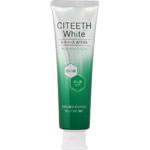
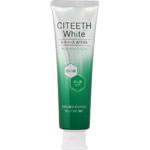

商品の特徴
美白＋むし歯もケアします。
歯を白くするだけでなく、むし歯も予防します。
トリプルステインオフ処方で歯を白くし、むし歯もしっかり予防します。
【使用上の注意】
発疹、発赤、かゆみ、はれ等の異常があらわれた場合には、使用を中止し、医師又は薬剤師に相談してください。
- 成分・分量
- 【成分】
歯磨用リン酸水素Ｃａ、無水ケイ酸、リン酸三カルシウム（β－ＴＣＰ）、精製水、エタノール、ソルビット液、濃グリセリン、ポリリン酸ナトリウム、
マクロゴール４００（ＰＥＧ－８）、ゼオライト、モノフルオロリン酸、ナトリウム（フッ素）、ラウロイルサルコシン塩、ポリビニルピロリドン、
ε-アミノカプロン酸、グリチルリチン酸、塩化セチルピリジニウム、香料（サニーグリーンミントタイプ）、キシリトール、ラウリル硫酸塩、
カラギーナン、カルボキシメチルセルロースナトリウム、リン酸Ｍｇ、パラベン
- 用法及び用量
- 【使用方法】
適当量を歯ブラシにとり、歯及び歯ぐきをブラッシングして下さい。
 
